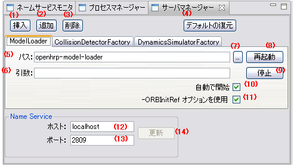

Server Manager View概要
Server Manager Viewを構成する各種要素について説明します。Windows上での設定を例にとります。

- 挿入 ボタン
クリックすることで、選択されているタブの前にServerを挿入します。ID(タブの名前になる)を入力するダイアログボックスが表示されますので、一意になるようなIDを入力してください。
- 追加 ボタン
クリックすることで、選択されているタブの後ろにServerを追加します。ID(タブの名前になる)を入力するダイアログボックスが表示されますので、一意になるようなIDを入力してください。
- 削除 ボタン
クリックすることで、選択されているタブを削除します。
- デフォルトの復元 ボタン
クリックすることで、変更を破棄し初期状態に戻します。
- パス テキストフィールド
Serverの起動コマンドを記入します。
- 引数 テキストフィールド
Server起動時の引数を指定します。
- 参照ボタン
Serverの起動コマンドを選ぶダイアログボックスを表示します。
- 再起動ボタン
Serverを再起動します。
- 停止/開始ボタン
Serverの起動または停止を行います。
- 自動で開始 チェックボックス
チェックしてある場合、GrxUIの起動時にServerの起動を行います。
- -ORBInitRef オプション チェックボックス
チェックしてある場合、Argsで指定した引数の他に下記の引数を追加します。
-ORBInitRef NameService=corbaloc:iiop:ネームサーバホスト名:ネームサーバポート番号/NameService
- ホスト名 テキストフィールド
ネームサーバホスト名です。
テキストフィールドの値を変更することで更新ボタンが有効となります。
RFC1035に準拠したホスト名を入力してください。
- ポート番号 テキストフィールド
ネームサーバポート番号です。
テキストフィールドの値を変更することで更新ボタンが有効となります。
0～65535の値を入力してください。
- 更新ボタン
Eclipseの次回起動時にネームサーバのホスト名とポート番号を各テキストフィールドの値で反映します。
各値の書式が妥当でない場合は、更新ボタン押下時にエラーダイアログが表示されますのでメッセージを参考にして入力をしてください。
- PathとArgs内で$(環境変数名)とすることで環境変数が使えます。
- RemoveボタンでServerを削除する場合や、既存のServerに変更を加える場合は一旦Stopボタンをクリックして停止させてからにしてください。そうでない場合はGrxUIの再起動後に有効となります。
- GrxUI起動時は左端のタブのServerから順に起動されます。